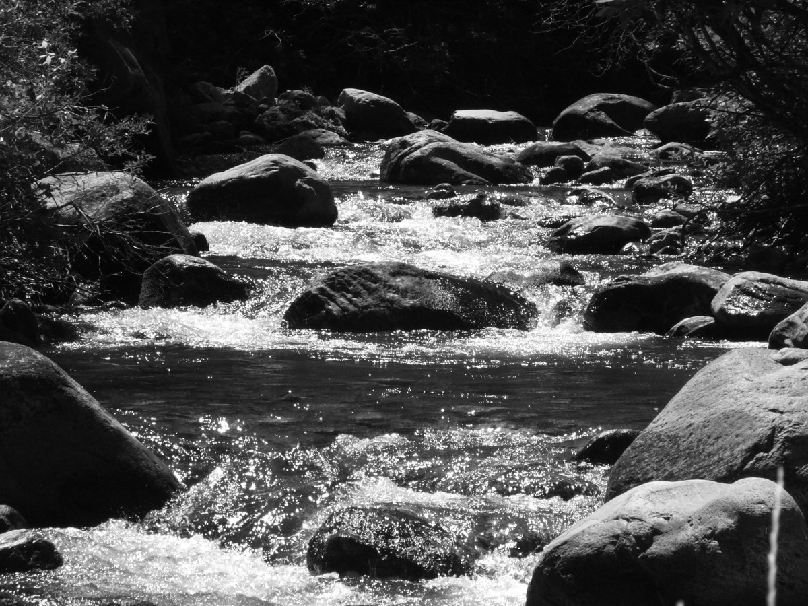
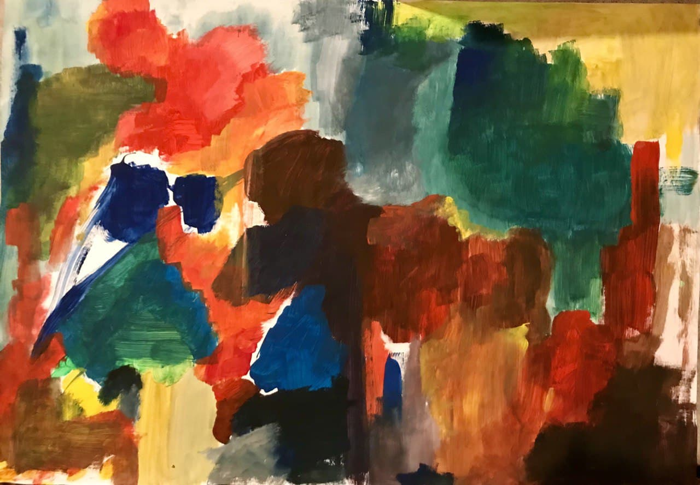

Institut für akustische Expedition
(Webseite befindet sich im Aufbau)
Das Institut für akustische Expedition wurde im Januar 2021 gegründet. Das Institut verfügt über ein Fahrzeug, welches mit technischen Geräten zur Erfassung von klanglichen Phänomenen ausgestattet ist (Hydro-, Kontakt-, Richtrohr- und gewöhnliche Stereomikrofone, sowie Aufnahmegeräte und diversen Klangaktivatoren). In regelmäßigen Abständen werden Reisen zur akustischen Erfassung des Stadtraumes Leipzig durchgeführt. Im institutseigenen Labor werden die Aufnahmen aufgearbeitet, analysiert und beschriftet, dies geschieht mit exakt notierten GPS-Daten, sowie fotografischen Dokumentationen. Die gesammelten Daten werden hier veröffentlicht:
Palmengartenwehr
29/05/2021 | 12.349679, 51.334996 | Kontaktmikrofon, Richtmikrofon, Stereomikrofon, Hydrophon
Das historische Palmengartenwehr wurde 1915 in Betrieb genommen. Die Architekten beschlossen damals das Elsterbecken - was ursprünglich eine Wiese war - für den Hochwasserabfluss freizugeben. Um das Wasser aber an dieser Wiese, die nur für den Hochwasserfall geflutet werden sollte, vorbeizuleiten, musste eben ein Wehr gebaut werden. Das ist das heutige denkmalgeschützte Palmengartenwehr, was mit dem angrenzenden Palmengarten eine Einheit bildet. Warum dessen Funktionsprobe genau jetzt durchgeführt wird, erklärt der Flussmeister Martin Etzold.

Östliche Rietzschke
17/03/2021 | 12.453678, 51.308585 | Kontaktmikrofon, Richtmikrofon, Stereomikrofon, Hydrophon
Die Östliche Rietzschke ist ein Bach, der durch die südöstlichen und östlichen Stadtteile Leipzigs fließt. Sein Name leitet sich vom sorbischen Wort rěčka für „Bach“ ab. Wasserrechtlich ist es ein Gewässer II. Ordnung.[1] Verlauf Die Östliche Rietzschke beginnt ihren Lauf aus einigen Feldbächen gespeist in Zuckelhausen, durchfließt die Stadtteile Holzhausen, Zweinaundorf (hier mündet der von Baalsdorf kommende Hohe Graben), Mölkau und Stünz, um dann in Sellerhausen in der Kanalisation der Stadt Leipzig zu enden.

Kelterei Bunge
03/04/2021 | 12.453678, 51.308585 | Kontaktmikrofon, Richtmikrofon, Stereomikrofon, Hydrophon
Die Östliche Rietzschke ist ein Bach, der durch die südöstlichen und östlichen Stadtteile Leipzigs fließt. Sein Name leitet sich vom sorbischen Wort rěčka für „Bach“ ab. Wasserrechtlich ist es ein Gewässer II. Ordnung.[1] Verlauf Die Östliche Rietzschke beginnt ihren Lauf aus einigen Feldbächen gespeist in Zuckelhausen, durchfließt die Stadtteile Holzhausen, Zweinaundorf (hier mündet der von Baalsdorf kommende Hohe Graben), Mölkau und Stünz, um dann in Sellerhausen in der Kanalisation der Stadt Leipzig zu enden.

Der Rundling
01/04/2021 | 12.392377, 51.296164 | Kontaktmikrofon, Richtmikrofon, Stereomikrofon
Der Rundling ist eine Wohnsiedlung im Südwesten Leipzigs.
Bahngleise an der Elisabeth-Schumacher-Straße
17/03/2021 | 12.453678, 51.308585 | Kontaktmikrofon, Stereomikrofon
die trauer beim anblick des sprießenden krauts
zwischen den bahngleisen.
heute morgen
bin ich verblüht am rande
einer kaffeetasse.
aprikosen
hatten wahllos am bettrand gelegen. der wind frischte auf.
jetzt
bin ich schon wieder zu weit in den tag verwickelt.
mit jedem atemzug
verlasse ich die welt einmal mehr.
angenehme trauer
des loslassens: welches auge bleibt?

×

An der Parthe
23/03/2021 | 12.453678, 51.308585 | Kontaktmikrofon, Richtmikrofon, Stereomikrofon, Hydrophon
Die Parthe ist ein Fluss in Sachsen, der im Glastener Forst zwischen Colditz und Bad Lausick entspringt und nach 56,7 Kilometern Flusslauf in Leipzig in die Weiße Elster mündet.

Ehemaliges Bahnbetriebsgelände Wahren
23/03/2021 | 12.453678, 51.308585 | Kontaktmikrofon, Stereomikrofon
Im Leipziger Nordwesten befindet sich das Bahnbetriebswerk Leipzig-Wahren. Zunächst wurde es um 1880 als Bahnhof für den Personenverkehr eröffnet. Um 1900 wurden alle Rangierbahnhöfe vom Zentrum Leipzigs in die Vororte Leipzigs verlegt.

×

Westbahnhof, Ton in Ton - Ausstellung
01/04/2021 | 12.322978, 51.325552 | Richtmikrofon
TONINTON ist eine jährliche Ausstellung für Bildende Kunst und Musik, organisiert vom Fachschaftsrat Kunstpädagogik und Musikwissenschaften der Universität Leipzig. 2021 feiert die Ausstellung ihr 10-Jähriges-Jubiläum! Ursprünglich ins Leben gerufen, um beide akademischen Fachrichtungen (die sich eine studentische Vertretung teilen) näher zu vernetzen, vereint die Ausstellung Arbeiten, die nach dem Prinzip der Vorlage und Reaktion in einen künstlerischen Dialog treten. Seit einigen Jahren ist das Projekt nicht nur geöffnet für Studierende, sondern für alle, die Lust haben sich am künstlerischen Austausch und beteiligen.

Über
Über Über Über
Über ist ein Über Über Über Über, ohne Über, keine Über
Kontakt
Bei Presse-, Kooperations oder anderen Anfragen: